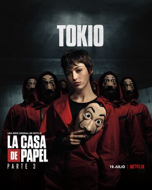
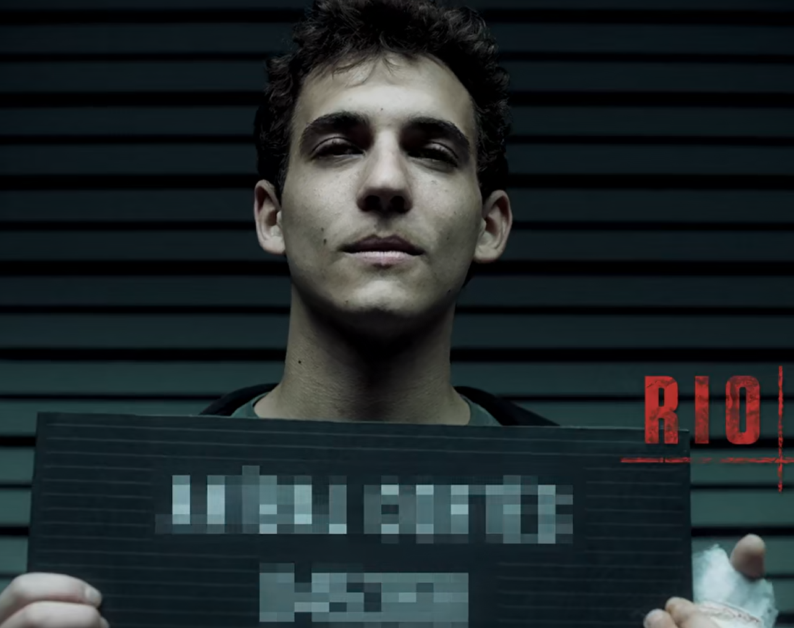
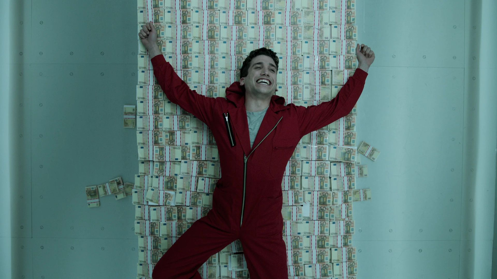
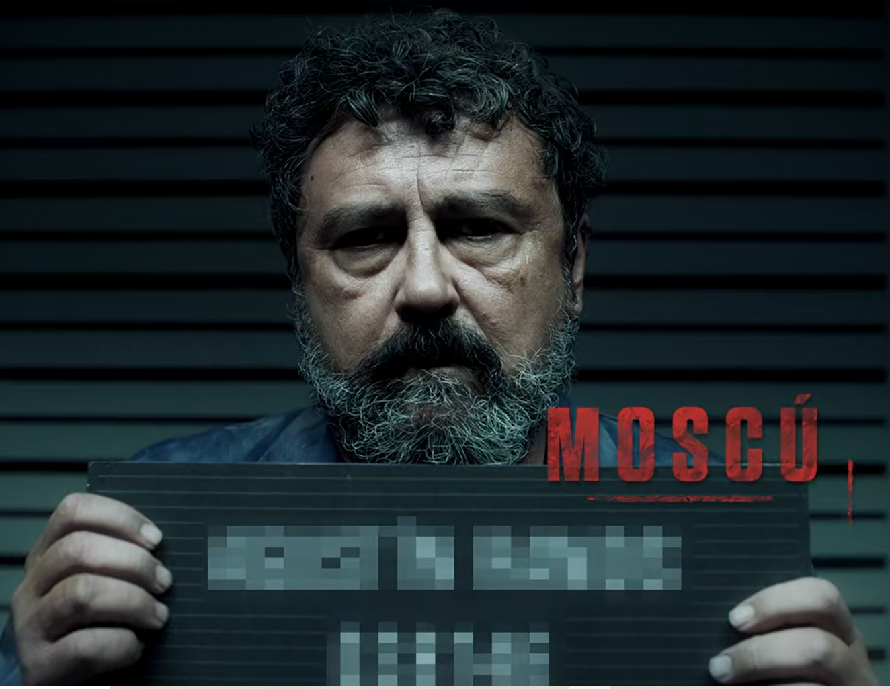
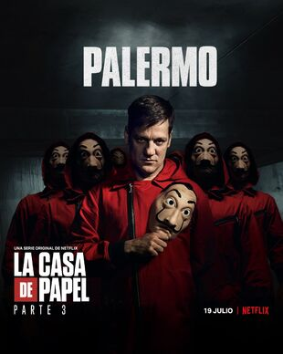
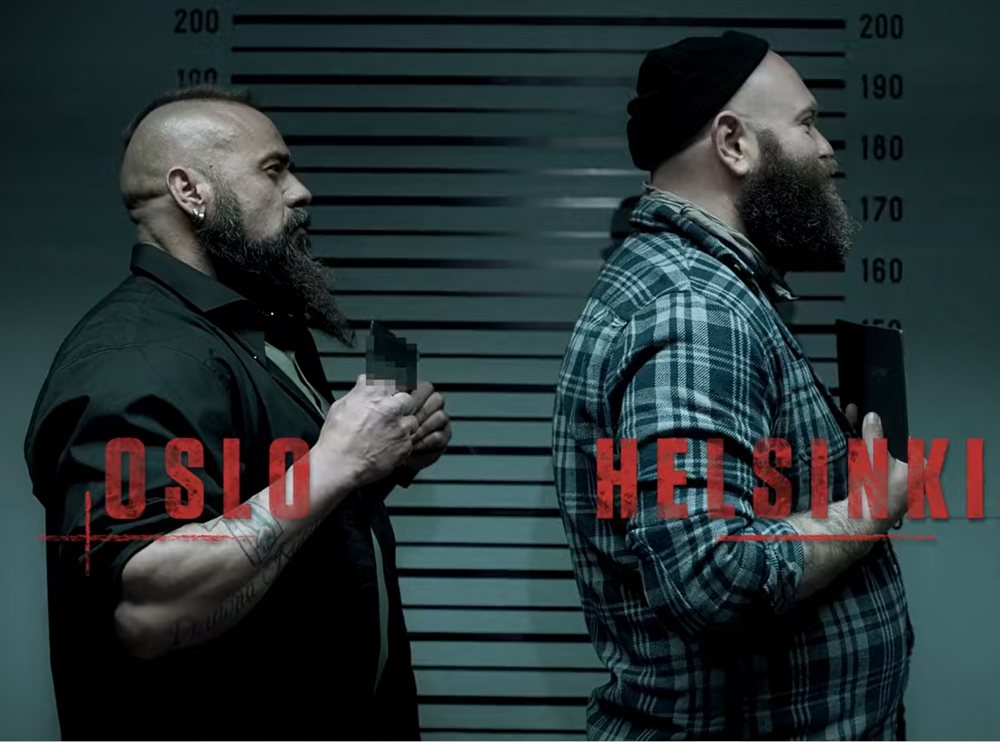
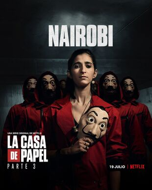
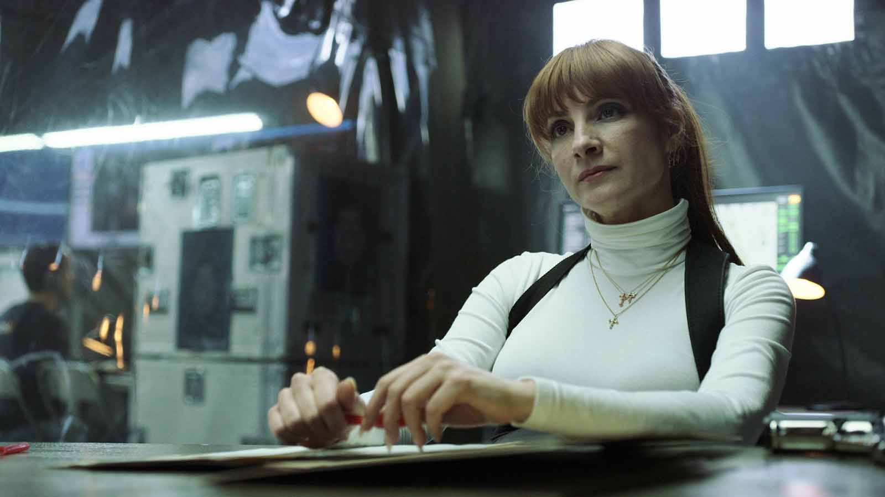
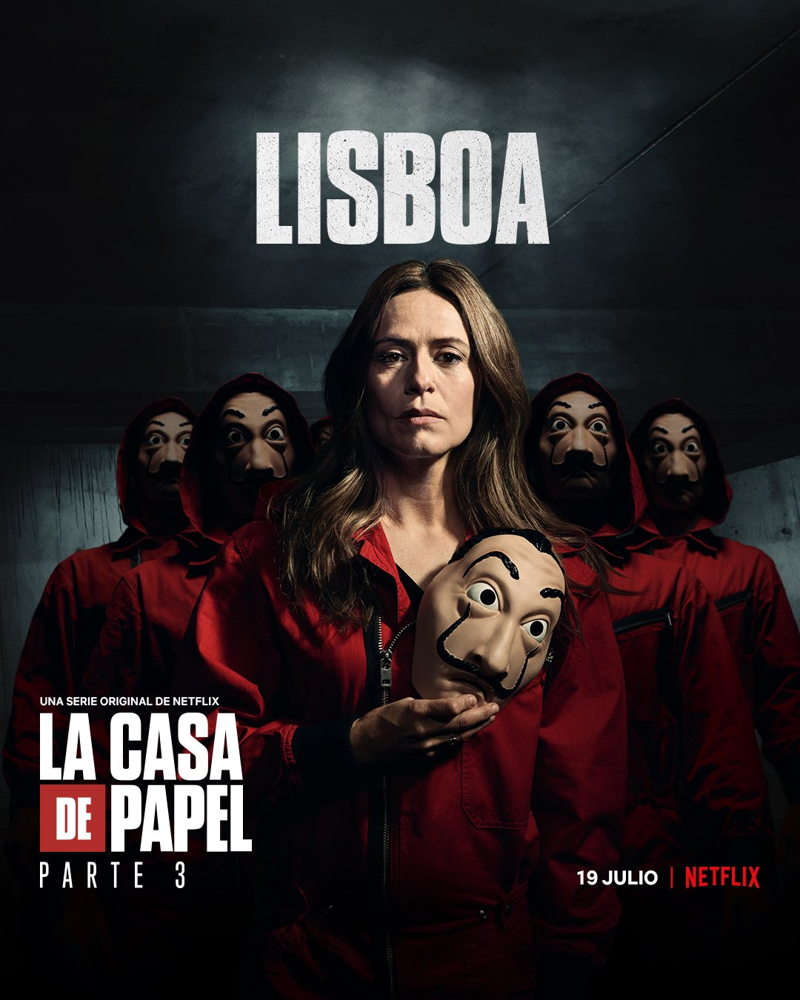

Andrés de Fonollosa, better known by his code name Berlin, is one of the main characters in the Netflix series Money Heist, portrayed by actor Pedro Alonso.
He is the second-in-command of the Royal Mint of Spain heist, but also planned the Bank of Spain heist years prior, which he shared with The Professor and Palermo.
Before joining the Robbers of The Royal Mint of Spain, Berlin was a jewel thief, with twenty-seven robberies to his name of jewelry stores, auction houses, and armored vehicles. His biggest theft, before the Royal Mint of Spain, was 434 diamonds in Champs-Élysées, Paris.
Somewhere in his life, he was recruited by his half brother to be the leader of the “greatest robbery ever”. He was trained in various things along with his fellow robbers, and he learned all the details of the heist.

Tokyo
A the age of 14, Tokyo joined her 28 year old boyfriend into a world of crime. Together, they successfully pulled off 15 heists.[1]
Part 1
One of Tokyo's heists with her boyfriend involving a Prosegur pickup truck ended in a shootout that killed three people, including her boyfriend. From then on, she became a fugitive. Posters with her face were put up all over Spain. While on her way home to see her mother for the last time before embarking on a ship, she was stopped by The Professor, who warned her that her mother's house was surrounded by police. He offered her to join his heist, along with 7 other robbers.
Haunted by the death of her ex-boyfriend, she vows to not mix heists with love. However, she quickly falls for Rio, a young and tech-savvy robber.
Physical Appearance
Tokyo has brown hair and brown eyes Most of the time, her hair is rather unkempt and of medium length, with the only part seemingly getting shaven or cut being her bangs, which are cut in a straight way as not to cover her eyes, and nothing more. On some occasions, she is seen with a different haircut, such as a bun.
Personality
Tokyo is reckless and impulsive, she usually acts before she thinks, which sometimes results in things she regrets. She let her relationship with Rio complicate the plans for the heist. She is quick to lose her patience, as well as sometimes being shown to quickly draw conclusions. She can’t control her emotions very well and also expresses them intensely.
She was the first to begin worrying when The Professor did not respond to the check-up calls, and almost immediately began taking extreme measures. She is, however, shown to care deeply for those whom she loves, as shown as when Rio is shot at the beginning of the show, and when she finds out her mother passed away. She can be very protective and loving with the people she truly cares about.

Rio
Rio was born in 1997 in Getafe. His nickname given by his mother was Rayo, meaning lightning bolt in Spanish. At young age he became interested in computers and began programming at the age of 6.[1] He often locked himself in his room for hours. His parents believed that he was working or playing on his computer, but he was actually beginning his career as a hacker.[2]
In 2010, he engaged in multiple cyber-attacks, which were all done discretely so the police couldn’t track him. He stole banking data and attacked North American servers. These hacks were reported by several online newspapers such as La Voz, La Nación, El Diario.com, however his identity was never discovered.
Part 1
Rio took part in the heist at the Royal Mint of Spain heist. During the learning process and preparation for the heist, he developed feelings for his fellow robber Tokyo and they began a secret relationship despite The Professor's request for participants not to fraternize. On the day before the heist, he gives Tokyo a dogtag necklace with his real name and proposes to her.
On the first day of the heist, Rio hacks the security cameras and alarms of the Mint and redirects it the to the hangar where the Professor hides. While accompanying Alison Parker, he fights with Tokyo which allows Alison to grab her phone to delete the picture of her on Instagram. However, the police hacked her phone and turned on her front camera, allowing them to see the inside of the Mint and Rio's face. After the police identified him, they started searching for the identity of other robbers. Eventually, they discovered that Rio had visited the mint a few months ago with Tokyo, jeopardising the heist. When Berlin discovers the truth, he sends two fellow robbers to beat up Rio.

Denver
Denver was raised by his father Moscow, who abandoned Denver's mother at a roundabout due her drug use. For many years, Moscow led Denver to believe that his mother abandoned him.
Part 1
Denver was one of the robbers participating in the Royal Mint of Spain heist alongside his father, Agustín Ramos (Moscow). His father invited Denver to join the heist due some issues that he was having with traffickers.
During the heist, Moscow reveals the truth about Denver's mother, resulting in an argument and rift in their relationship. However, he is forgiven shortly afterwards when Moscow dies after being shot by police.
Physical Appearance
Denver has dark hair that is short and curly. He is not very tall.
Personality
He is hot-headed, but shown to have a sensitive side when he chooses to protect hostage Mónica Gaztambide instead of disposing for her as instructed by Berlin.
Relationships
According to Denver's father Moscow, all of his relationships prior to the heist were with women that were neither attractive nor intelligent. He previously dated a woman named Vane, however not much is known about her.

Moscow
His first job was a miner in Asturias, but he later became a thief using tools to rob banks.
Little is known about Moscow's childhood, but we find out in Part 2 that when his son, Denver, was very young, his wife was struggling with a drug addiction. Moscow revealed that he left his wife at a roundabout to pick up her drugs, but left with Denver before she returned, and moved elsewhere.
He explains that he regrets that decision and went back many times to try and find her, but never did. He only told Denver the truth about this during Part 2; until then Denver thought his mother left them. Before beginning his criminal life of burglary, he used to be a miner, but it was revealed that he was claustrophobic and so left shortly after.
Moscow was also involved in other robberies before the Royal Mint robbery, and had served time before as seen in Part 1. He accepted the Professor's offer for the Royal Mint robbery to help Denver out after 800 pills he was holding for a dealer got stolen from his car, and help pay off his debt

Palermo
He is born in Buenos Aires, in Argentina and has known Berlin for at least 10 years. Prior to the second heist, he had lived in Palermo, Italy. He is a trained engineer.
Bank of Spain heist
Although he was not part of the Royal Mint of Spain heist, he was an acquaintance of Berlin and The Professor prior to that. He collaborated with Berlin for coming up with the Bank of Spain heist and they both presented the plan to The Professor, who was uncertain about it. The Professor had his doubts about Palermo, claiming he cared more about his love for Berlin — with whom he exchanged a kiss — than the plan itself.
After the robbery of the Royal Mint, when the crew needed a way to rescue Rio from captivity, The Professor started organizing the Bank of Spain heist, bringing Palermo into the fold at a time when he was in pain due to the loss of Berlin.
Palermo was the man in charge at the bank, but his volatile personality soon caused tensions with rest of the group and Tokyo assumed command.
Palermo became a rival for the crew for some time and was responsible for talking Gandía, the bank's head of security, into freeing himself. However, he was eventually reintegrated into the group.
During the heist, he was shot at by Gandía and he ended up needing surgery to get shards of glass removed from his eyes. He spent the rest of the heist wearing an eye patch.

Helsinki and Oslo
Helsinki was born in Serbia. He was a soldier in the Yugoslav Wars with his cousin Oslo. He has a family in Serbia, to whom he sends money when he can.[1]
During the war, he had a bullet taken out of him in a tractor garage.[2]
Part 1
The Professor recruits Helsinki in addition to seven other robbers, including his cousin Oslo. He was responsible for making the Professor's Seat Ibiza disappear after Tokyo and Rio used it to go to the Museum of the Factory. The Professor gave him with a thousand euros in order to pay the employees of the car junkyard to destroy it in front of him.
Born on November 17th, 1974 in Belgrade, Serbia. Fought in the wars with his cousin Helsinki. Oslo died on October 24, 2016 at the age of 41.
Royal Mint of Spain heist
Oslo and cousin Helsinki act as hired guns and the muscle during the heist. They're usually seen acting as crowd control. They don't really think independently, and mostly just follow orders. Oslo and Helsinki helped Berlin to punish Rio in Part 1 Episode 3, and are also seen aiming guns at Denver and Nairobi during a standoff with Berlin in Part 1 Episode 9.
In Part 1 Episode 12, Oslo was struck across the head with an iron rod by a group of 16 hostages as part of an escape plan. This knocked him unconscious allowing the hostages to grab his gun and eventually escape, blowing a hole in a wall that the rest of the gang have to cover up. Oslo is left in a vegetative state for the rest of Part 1.
In Part 2 Episode 1, seemingly unable to revive him, Helsinki takes Oslo to a storage room and suffocates him with a pillow, mercifully killing him. This makes Oslo the first robber in the show to die.

For Nairobi (Who would miss that)
She was born as Ágata Jiménez. Due to her poor conditions, she learned to counterfeit money at 13. During her teenage years, she had a boyfriend, who she later became pregnant with. Her boyfriend left after he found out about the pregnancy. Jiménez gave birth to a boy, she named him Axel. However, when Axel was 3, child services took him away from her after finding out she was dealing drugs.[1] It is also revealed that she gave birth to a daughter.
Prior to the first heist, The Professor and the robbers spend five months on Toledo in preparation for the heist at the Royal Mint of Spain. Everyone agrees to be codenamed after cities, because of the Professor's rule of no real names. Jiménez chose to be known as Nairobi.
Part 1
Jiménez was recruited by the Professor to participate in the heist of the Royal Mint of Spain.
Nairobi was one of the robbers that participated in the heist of the Royal Mint of Spain, being in charge of quality relating to the printing of money given her expertise in falsifications. She briefly took charge of the robbery following problems within the group, declaring the beginning of "the Matriarchy."
Part 3
At the conclusion of the first heist, she ran away into hiding with Helsinki in Argentina, but later reunited with the rest of the robbers to be part of the Bank of Spain heist, in which she was eventually shot in the chest by a police sniper and had to be tended to by the crew.

Alecia
She is brought onto the case to stop the robbery of the Bank of Spain. She also was in charge of interrogating Rio when he was taken into custody in Part 3.
In Part 3, Episode 8, she brings Nairobi's son, Axel to the Bank of Spain. Luring Nairobi to the window, Sierra gives permission for one of her snipers to shoot.
In Part 4, Episode 8, she pins all accusations against her on Colonel Tamayo and the Spanish Government. She is fired from the police department, and Tamayo orders a search for her. Sierra flees from her residency before the police find her. At the end of Part 4, she is seen pointing a gun at the Professor , and the season ends.

Lisbon
Raquel Murillo Fuentes was a Spanish Police Inspector based in Madrid. After the crumbling of her marital relationship with Alberto Vicuña, she filed a restraining order against him, and got full custody of her daughter, due to the accusation of his abuse.
Part 1
Raquel Murillo was called on her day off, and asked to be the negotiator of the heist occurring at the Royal Mint. She agreed, and told the operator to send a car, and they tell her that it's already outside. From this, we can infer that Raquel was a trusted and well-liked Inspector.
Throughout the heist, she was responsible for negotiating with The Professor.
Despite being a more than capable investigator, she is tricked by The Professor, who gets closer to her under his false identity of Salva Martín in order to affect police activity. Although she eventually sees through the ruse, she falls in love with him and they run away together after the conclusion of the heist.
Part 3
Murillo becomes part of the group of robbers as they prepare a second heist, this time targeting the Bank of Spain, and remains at the Professor's side as he begins operating behind the scenes again.
THE PROFESSOR
Well, he is a ghost and has'nt renewed his ID since the age 19 so he's a real smart ghost.
PS: IF SOMEONE SCROLLED DOWN THIS FAR FOR PROFESSOR, SALUTE TO YOU BUT HE DOES NOT NEED AN INTRO